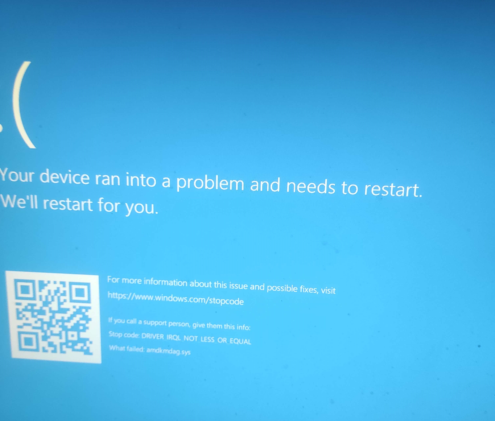

Day One, Hour Zero.
We will be starting this project in Infdev, specifically inf-20100630-1835, also known as Minecraft Alpha v1.0.0. This is as barebones as it gets, without sacrificing compatibility with future versions of world generation. Multiplayer is not yet implemented, so we will be following our project leader and server host, stealingudc_ (aka stealing_society) until we update to Alpha v1.0.15.
https://github.com/stealingudc/
Our journey begins, not by creating a new world as usual, but by finding tools necessary for the preservation of our world. After hours (yes, hours!) of scouring through GitHub repos, MinecraftForum posts and old versions of websites (courtesy of archive.com), we came across an old BitBucket repo for MCEdit, coming up with as early of a version as 0.1.5 and the MinecraftForum post (still up at the time of writing!) featuring NBTExplorer v2.5.0. Download links for all of the tools we’re about to use can be found on our Tools page, with Google Drive mirrors just in case.
If any of the original links/mirrors go down for whatever reason, you can message us on Discord or create an Issue on our GitHub repo.
Discord Server:
https://discord.gg/X9u5a3GnRGGitHub Repo:
https://github.com/stealingudc/Recollection/issues-
Hello, World!
Our world spawn seems.. promising, to say the least. Out of many worlds we tried generating, this seemed to catch our eye the most, as the chunk borders here are really rough, which seem fitting for our playthrough.
What better way to immortalize this than to build a house straight in the middle of it? We could call it the "chunk lands" or something like that. ^^
In this and the upcoming versions we'll be looking forward to:
- Dungeons
- Saddles
- Minecarts, especially Booster track systems:
I blame Dinnerbone.
Sometimes we tend to forget that old versions of Minecraft don't work well with modern architecture. Welp, that gives us no choice but to upgrade, since we couldn't possibly risk file corruption. That would defeat the whole purpose of our project.
Ah, 30 minutes of gameplay well spent.
If that gives us an excuse to upgrade, we might as well upgrade to Alpha v1.0.15, so that our whole team can play together. Don't worry - we won't be missing any features along the way.
See you in Alpha!